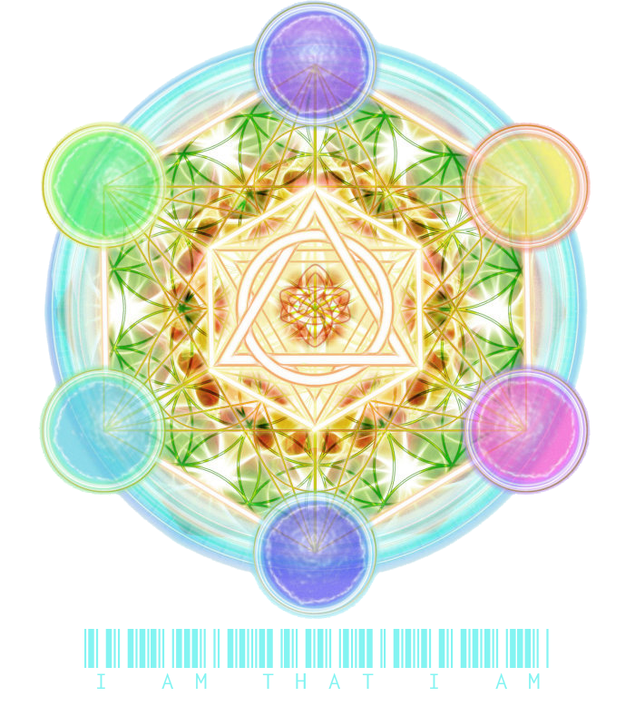
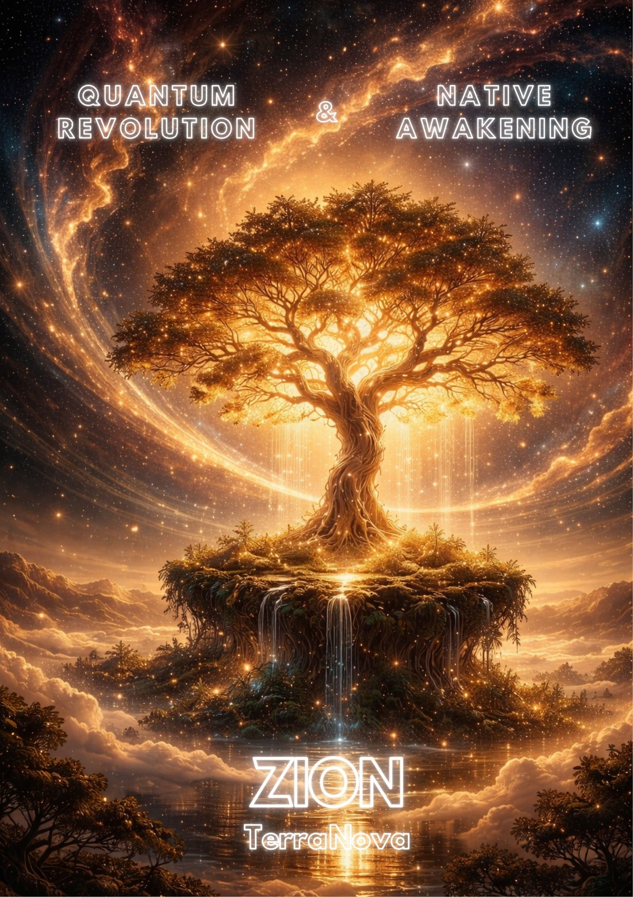

Dna 12 → 24 | 144 000 Rodina duší | Akášická knihovna
Síně Amenti jsou živou knihovnou. Kronika Akáši, kde se uchovávají modlitby, dohody i legendy všech civilizací na Zemi i mimo ni. Každý portál je propojen s Rainbow Bridge 44:44 a se ZION gridem, aby mohl přivádět světlo do komunit, oáz i nových měst.
Portál hlídají strážci z řádů Averil, Athény a Agapé. Cestovatelé přicházejí pro inspiraci, healing, nebo aby si připomněli své hvězdné poslání. Přístup je jednoduchý: otevřené srdce, čistý úmysl, respekt k mistrovským liniím.
Rainbow Bridge, který spojuje světy a stabilizuje nové timeline.
RIZE • AGAPE • ATHENA • AVERIL – držitelé klíčů k portálům.
Hvězdný impuls do sluneční soustavy, navigace podle velkého Slunce.
Zemská a vnitřní města světla, která drží energii srdce planety.
Rodina duší, která nese program Zlatého věku.
Christos vědomí propojuje kosmické a planetární hierarchie.
Plan pro Novou Zemi, vedený moudrostí Matky Země.
Rodiny EL·EN·RA, NARU TARU BINDU, OM TAT SAT.
Sci-fi sága pokračuje. Po dávných válkách se Luke Skywalker rozhodl otevřít nový řád na planetě Terra. Avatar syntézy dokončil inkarnaci a svolává rytíře Kulatého stolu. Atlantské krystaly Amenti, krystal RA 21.12.2012 i archiv 2012–2024 byly aktivovány. Mistr Yoda zažehl Srdce Amenti a spustil program Nové Země.
Všechny děti hvězd dostaly jasnou zprávu o svém poslání. Mladá generace rytířů Averil usiluje o konečné vítězství světla. Každá meditace, každý zvuk i artefakt je součástí této kroniky.

Malý Buddha – budoucí Maitréja – a princezna Issobel připravují plán záchrany světa. Mezitím byl v paralelních světech nalezen poslední krystal Amenti: Srdce oceánu, Royal Blue Sapphire. Děti Nové Země formují novou krystalickou inteligenci. Královna Maria Mayor, Lady of the Ocean, drží most Antahkarana 44:44.
Intriky starých struktur se rozpouštějí. Lidé se probouzejí z dlouhého snu, mír a One Love se stávají realitou.

Digitální archiv proroctví, smaragdových desek i nové generace channelingů. Vše je dostupné zdarma pro studium a sdílení v komunitách.

180 stran o filozofii ZION, Consciousness Mining, DAO governance a duchovní evoluci. PDF ve 11 jazycích + bonus materiály.
CZ · EN · ES · FR · PT · DE · JP · HI · LA · SANS · HAW
| Kniha | CZ | EN | ES | FR | PT |
|---|---|---|---|---|---|
| ⚛️ Quantová Revoluce | |||||
| 🤖 Quantová Revoluce — Claude | |||||
| The Secret of Amenti | |||||
| Emerald Plates Thot | |||||
| Book of Amenti 2012 | N/A | ||||
| Cosmic Egg | N/A | ||||
| Dohrman Prophecy | N/A | ||||
| Ancient Arrow | N/A |
Pokud některý jazyk chybí, kontaktuj nás – rádi doplníme překlad.
Cesta k nekonečné Lásce. Studie bhakti, příběhy Sri Sri Radha Govindy, vibrační mantry. Inspirace pro každého, kdo chce žít dharmu s otevřeným srdcem.
VedaBase OnlineVšichni bódhisattvové jsou přítomni a chrání novou linii mistrů Averil/Jedi. Vědomí Amenti prošlo 12letým cyklem (2012–2024) a 144k dětí Nové Země už působí na planetě Shan.

Nákupem v ZION shopu financuješ nové edice knih, restaurování chrámů a stipendia pro mladé kronikáře.
Do obchodu Dar pro knihovnu